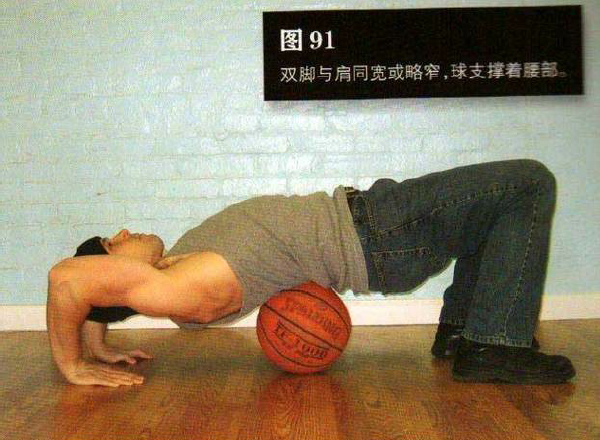
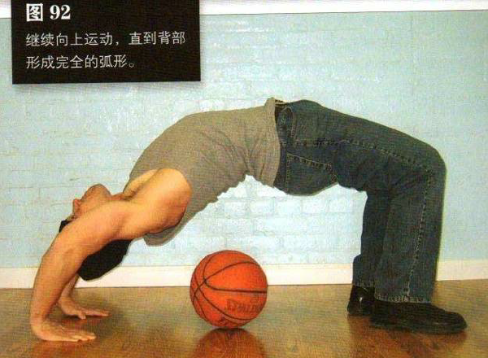

这个动作需要借助一个篮球或足球来控制动作幅度。坐在地上，把球放在自己身后的地上（靠近自己）。向后躺，只有双肩和双脚在地面上，双脚与肩同宽或略窄，球支撑着腰部。
如果你感觉这种姿势不舒服，在开始前可以在球上放上毛巾或坐垫。双手撑在头部两侧的地板上，手指指向脚。然后，用手把双肩和头部推离地板，只用双脚、球和手掌支撑身体
在这个姿势基础上髋部要尽力向上顶起，伸展手臂和双腿，抬起背部，直到背部完全离开球。继续向上运动，直到背部形成完全的弧形。这是结束姿势 （图 92）。
在最高处暂停一会，然后慢慢放低身体，回到起始姿势。在一组动作过程中，后腰只能轻轻接触球，而不能将整个身体的重量都压在球上。重复练习，尽量保持正常呼吸。
初级标准：1 组，8 次
中级标准：2 组，各 15 次
高级标准：2 组，各 25 次